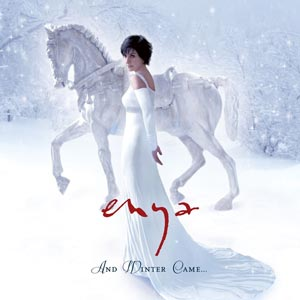

Holidays with Enya
Christmas Secrets
The ultimate compilation

And Winter Came...
A winter-themed album
The Very Best of Enya
The perfect gift
Enya songs, albums, biography...
Welcome to Enya One! Explore Enya's song lyrics, translations, albums, videos, and biography.
- Discography: Discover all songs, albums, and lyrics.
- Biography: Gain a deeper understanding of Enya's career and life.
- FAQs: Find answers to frequently asked questions.
- Explore the genre: Discover more artists like Enya: New Age, celtic artists with similar ethereal or ambient styles.
Even more about Enya:
- Stream Enya's Music: Explore a complete list of Enya's songs available for streaming and download.
- Creative Collaborators: Roma Ryan and the late Nicky Ryan contributed significantly to Enya's music, writing and producing captivating compositions.
- Family Ties: Clannad a renowned band formed by Enya's family including Moya Brennan, influenced Enya's musical journey.
- Multimedia: Watch music videos and live performances.
Who is Enya?
Enya is a Grammy Award Irish singer, often labeled as “New Age”. Singing and playing all instruments by herself, she made world hits such as “Only Time”, “May It
Be” and “Orinoco Flow (Sail Away)”.
More about Enya »
Artists like Enya: Celtic Woman, Clannad (Enya's family band), Loreena McKennitt, Vangelis and Yanni.